Win 1: medium on Glow Worm, win 2: hard, win 3: Yarn (the new-string banner).
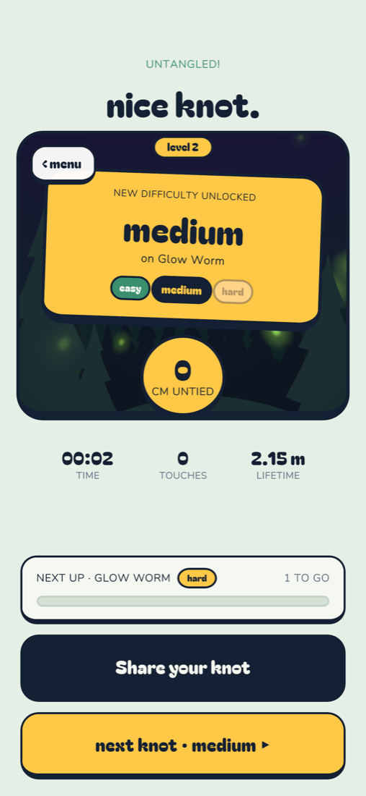
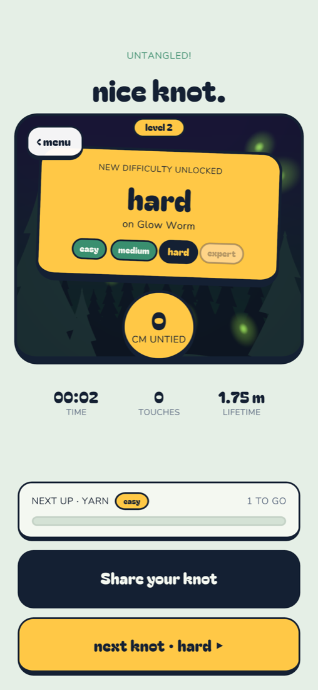
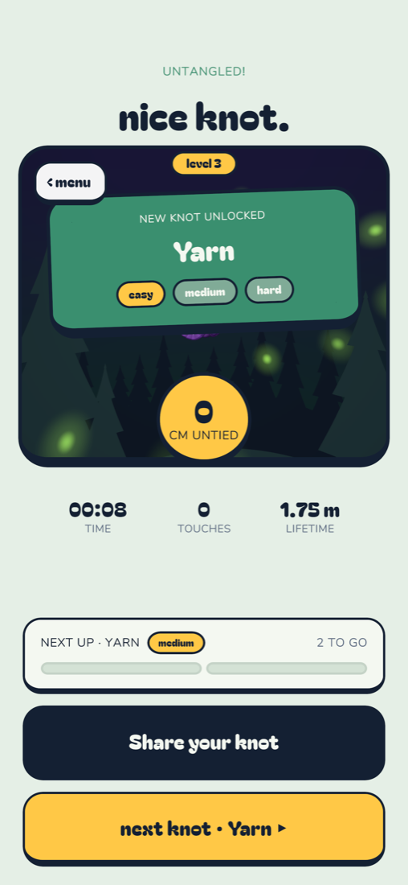
(The hard shot was taken before the fix that hides the expert chip on Glow Worm, which has no expert tier; the medium shot shows the fix.)
Each row: easy, medium, hard, expert (Glow Worm has no expert). Knots shown tied; some colours (Vines leaves, Rainbow) bloom fully once untied.
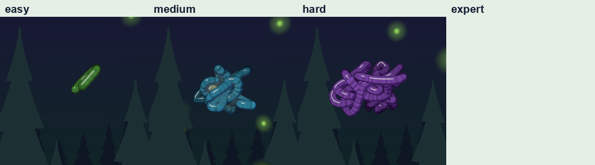
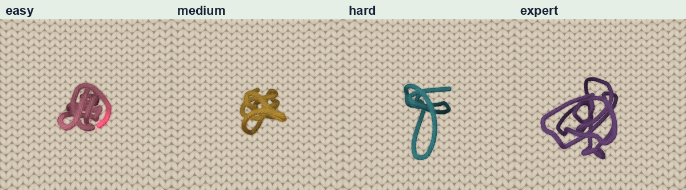
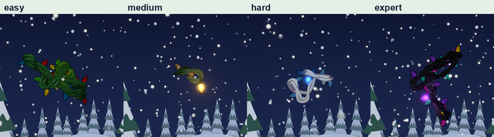
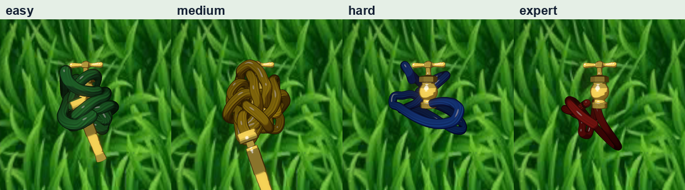
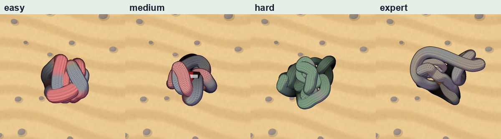
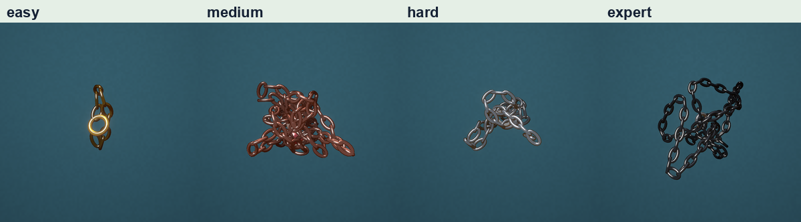
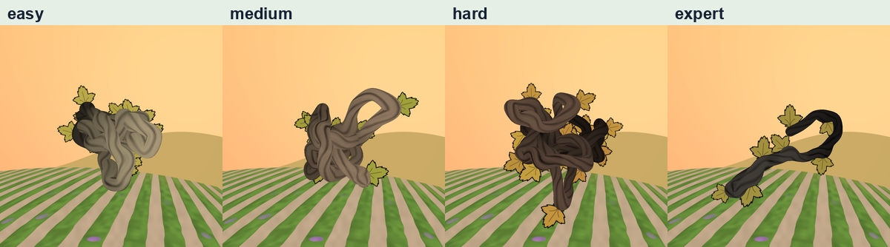
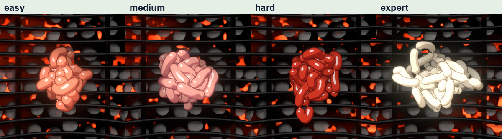
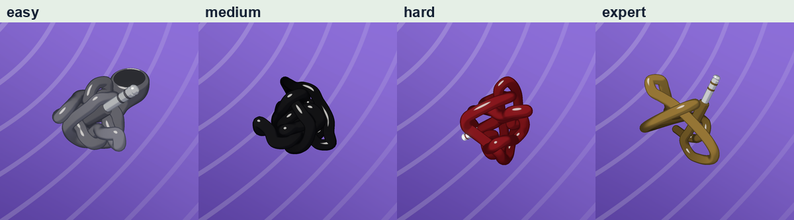
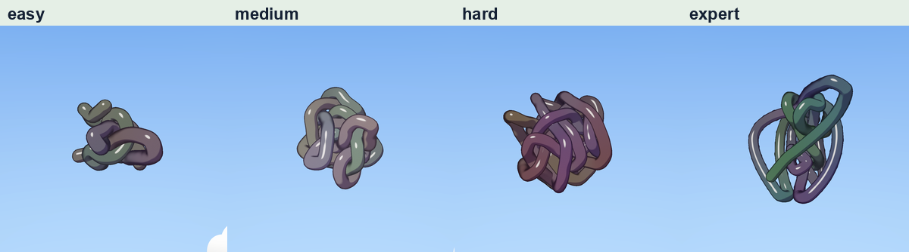
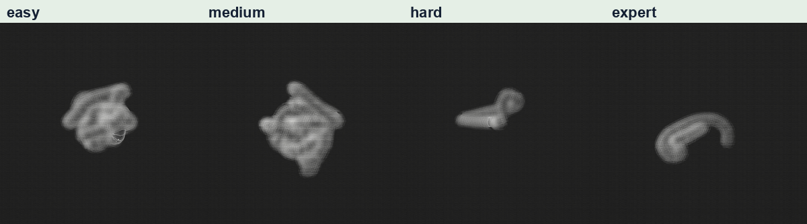
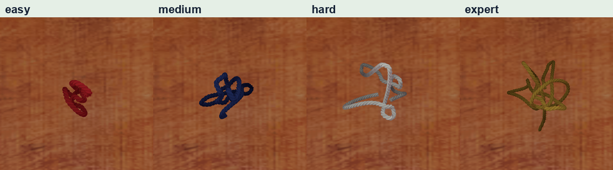
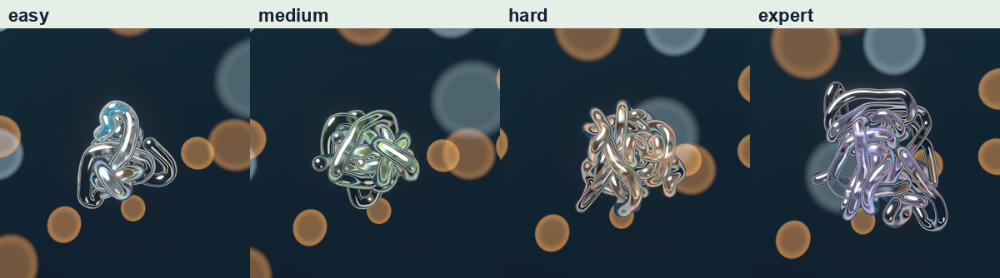
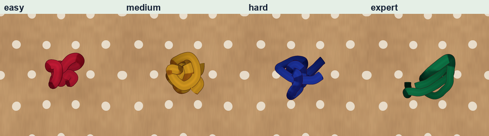
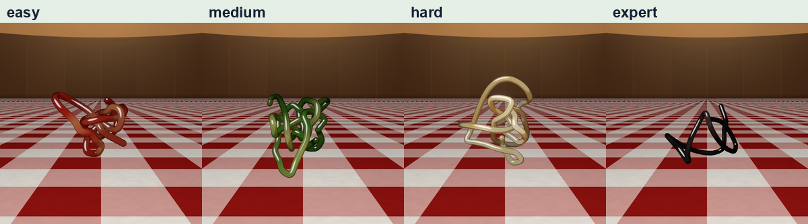
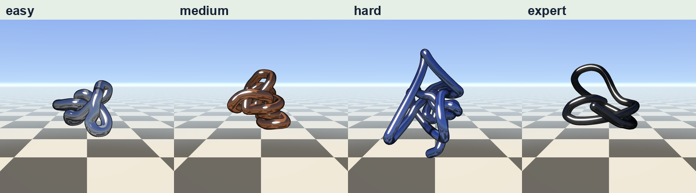
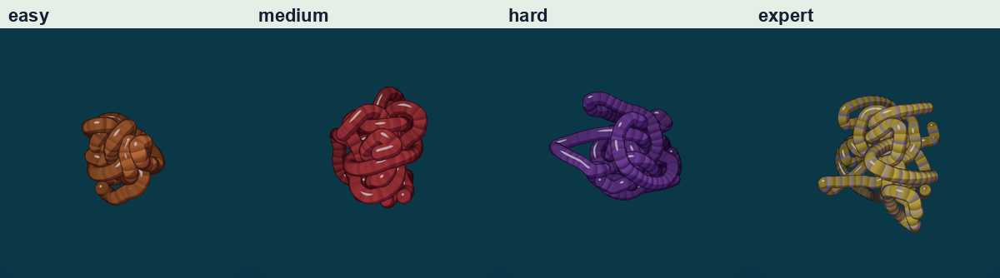
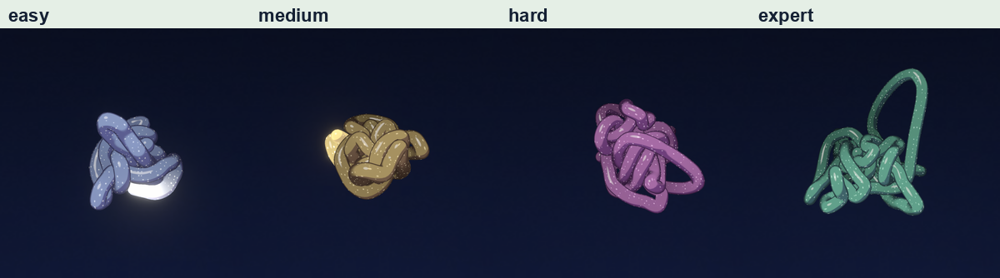